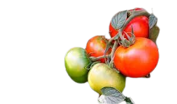
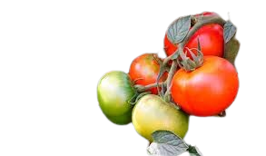

TOMATERA
 

Descripción morfológica
La tomatera (Solanum lycopersicum) es una planta herbácea anual que pertenece a la familia Solanaceae. Es conocida por sus frutos comestibles: los tomates.
Presenta tallos erectos o rastreros, hojas compuestas de gran tamaño y flores amarillas en forma de estrella. Los frutos pueden variar en tamaño, forma y color, siendo los más comunes los rojos y redondos.
Distribución y hábitat
Originaria de América Central y del Sur, especialmente de la región andina. Se cultiva actualmente en todo el mundo.
Prefiere climas cálidos y soleados, suelos bien drenados y ricos en materia orgánica. Es común en huertos urbanos, invernaderos y cultivos a cielo abierto.
Ciclo de vida y reproducción
La tomatera tiene un ciclo de vida anual. Se reproduce sexualmente mediante semillas contenidas en los frutos maduros.
La germinación ocurre entre 7 y 14 días después de la siembra. Se recomienda trasplante cuando las plántulas tienen 4 a 6 hojas verdaderas.
Usos principales
🌿 Alimenticio: El tomate es uno de los frutos más consumidos a nivel mundial. Se usa en salsas, ensaladas, jugos y platos cocidos.
🌿 Económico: Cultivo de alta importancia económica en la agricultura comercial.
Ficha botánica
| Nombre común | Tomatera |
|---|---|
| Nombre científico | Solanum lycopersicum |
| Reino | Plantae |
| Filo | Magnoliophyta |
| Clase | Magnoliopsida |
| Orden | Solanales |
| Familia | Solanaceae |
| Género | Solanum |
| Tipo de planta | Herbácea anual |
| Altura | 0.5 a 2 m |
| Reproducción | Sexual (semillas) |
| Usos | Alimenticio, económico |